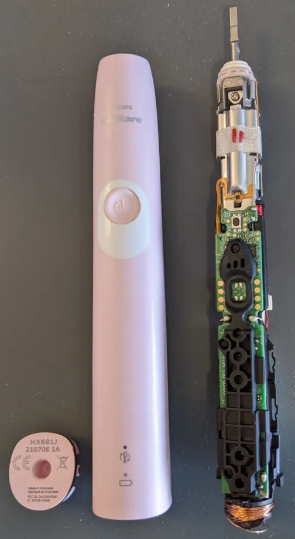
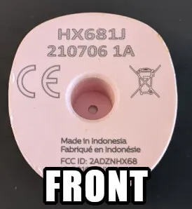
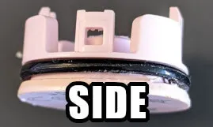
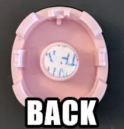
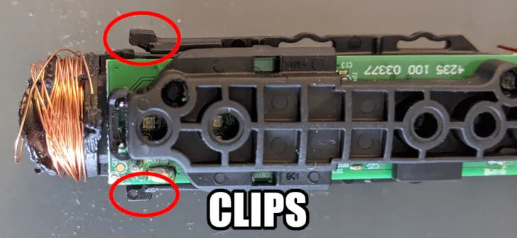
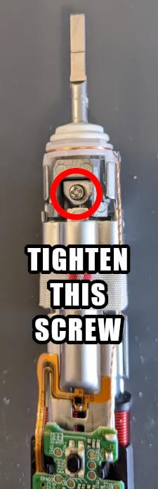
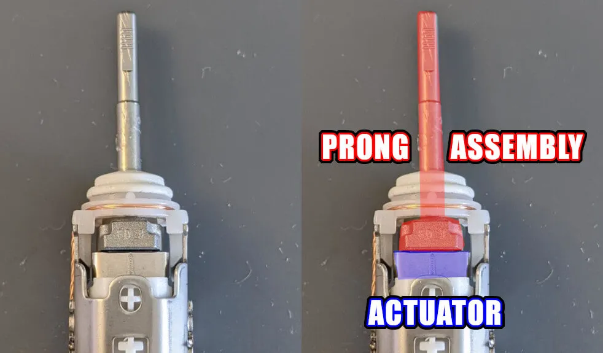
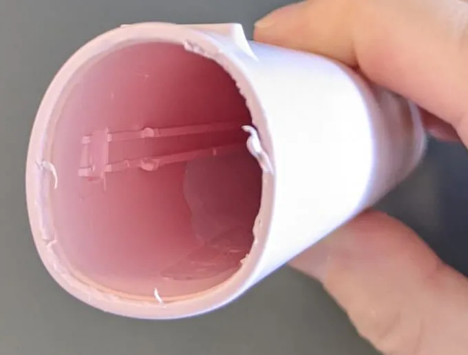

Maybe Fix Your Philips Sonicare Toothbrush

I like my Philips Sonicare electric toothbrush, but I've had two of them fail in exactly the same way. I decided to open it up and figure out why. Unfortunately, I destroyed mine in the process, but only for lack of information. Maybe you can fix yours armed with what I learned.
Standard disclaimer: I'm not responsible for how you use this information. If you break a working toothbrush or hurt yourself, don't blame me. If you're not comfortable opening up electronic devices that weren't meant to be customer serviceable, don't try to repair your toothbrush. I strongly recommend reading this to the end before attempting any of the steps I'm about to describe.
The symptoms
Both of my toothbrushes that failed in this way stopped vibrating the brush head with any significant force, but they became unsettlingly loud while they were turned on. If I took the brush head off, the metal prong the brush head is press fit onto seemed looser than when it was new. It would freely tilt forward and back.
Opening up the toothbrush
To open the toothbrush, you must use a spudger to pry out the cap on the bottom of the enclosure. It is press fit into place and has a rubber o-ring to keep water out. I recommend using a plastic spudger as the metal one I used chewed up the plastic on the enclosure.
  
Once the cap is removed, there are two clips holding the inner assembly inside the enclosure. This is what tripped me up and led to the damage to the induction coil at the bottom that is used to charge the battery, as seen in the photo. Using thin spudgers, small screwdrivers, or perhaps even a bent paperclip, I believe the clips can be undone without causing damage. The inner assembly should freely and easily slide out of the enclosure. It's probably a fiddly job, but I'm pretty sure it's possible to do.

The underlying issue
See the screw at the top of the toothbrush, near the mechanism attached to the brush head's prong? Check to see if it's loose and tighten it if it is.

That's it. That screw came loose and your toothbrush failed. It probably came loose because it's part of a mechanism that's subject to intense vibration when the toothbrush is in use. A fraction of a cent's worth of thread locking compound would probably prevent this failure and keep these toothbrushes in service for much longer.
If you look at the back of the assembly, you'll see two pieces of metal, pictured here. They rest against each other thanks to the pressure provided when the aforementioned screw is tight, but they are otherwise unsecured to one another.

The bottom piece is the actuator that vibrates when the toothbrush is on. The top pieces are part of the sub-assembly that connects to the brush prong. If that screw becomes loose, there's not enough resistance to keep the prong assembly in contact with the actuator, causing it to vibrate freely instead of channeling the vibration into your brush head.
Closing up
I broke my toothbrush and won't be reassembling it, but it should be as easy as taking it apart in reverse. Make sure the inner assembly's black plastic rails locate in the grooves along the inside of the enclosure. Insert it until the clips snap into place. Firmly press the bottom cap back into place.

Note that the lithium ion battery in the assembly looks like it's replaceable. The battery is not replaceable. Do not try to remove it as it is soldered to the circuit board, but not so strongly that it won't easily break off if you force it.
In case it helps someone searching for the numbers on the bottom of their toothbrush, here are the numbers that were on the bottom of this one:
HX681J
210706 1A
FCC ID: 2ADZNHX86
IC: 20109-HX68